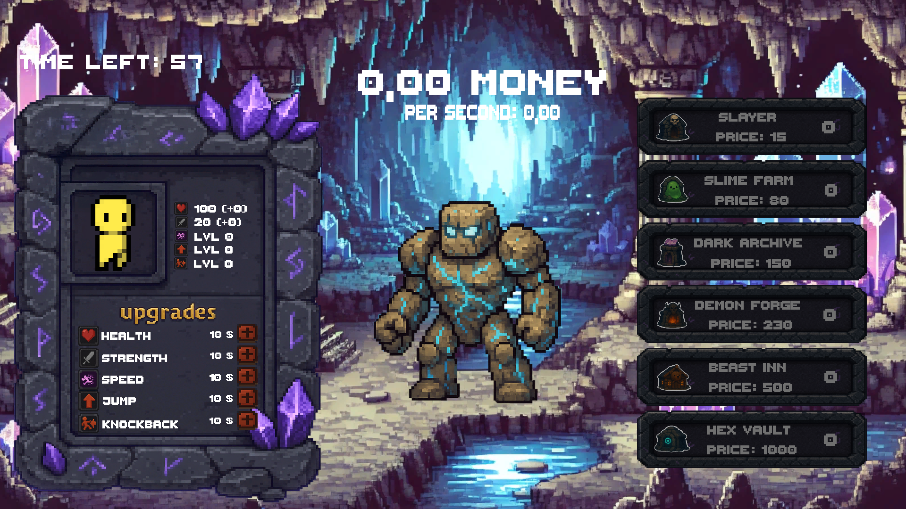

Le but de ce projet était de créer un jeu vidéo sur Unity en groupe de 5 personnes.
Nous devions concevoir un jeu disposant d'éléments multijoueurs et d'une intelligence artificielle.
Ce projet représente pour moi mon premier véritable projet en équipe, où j'ai pu appliquer mes compétences en programmation et en conception de jeux.
Ma Contribution
Mouvements : J'ai implémenté les mouvements du personnage en essayant de les rendre fluides, réactifs et intuitifs pour les nouveaux joueurs
Combat : J'ai conçu le système de combat, en intégrant des mécaniques de jeu équilibrées et engageantes.
Installateur : J'ai créé un installateur avec Inno Setup pour faciliter la mise en place du jeu sur les machines des utilisateurs.
Difficulté surmontée : Le plus grand défi a été la découverte du travail en équipe sur des projets plus conséquents qu'à l'ordinaire. Cependant, cela m'a permis de mieux comprendre la dynamique de groupe et d'améliorer mes compétences en communication.

Capture d'écran du jeu
Résultats et Apprentissages
Le projet a été très apprécié par le jury d'enseignants et m'a permis de développer mes compétences en travail d'équipe et en gestion de projet.